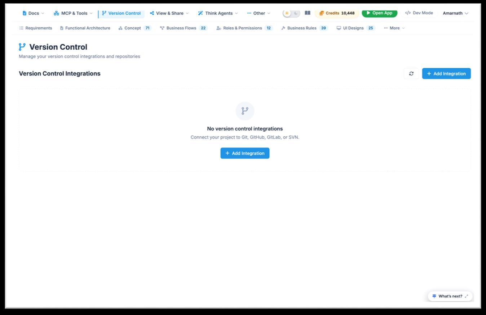
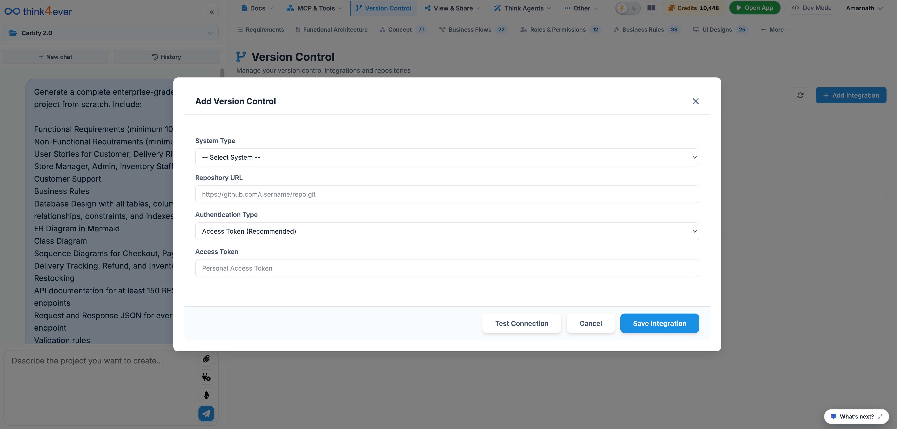

Version Control
The Version Control page allows you to link your project workspace directly to external source code repositories and version control providers (such as Git, GitHub, GitLab, or SVN). Connecting a repository enables seamless code synchronization, tracking changes, and triggering deployment workflows directly from the platform.

Interface Elements & Description
- Header Title & Subtitle: Displays Version Control and specifies its function ("Manage your version control integrations and repositories").
- Integrations Canvas: Displays connected integrations or an empty-state message ("No version control integrations").
-
Action Buttons:
- + Add Integration: Main action buttons (located both at the top right and within the central canvas) used to initiate provider setup.
- Refresh Icon: Located next to the top-right button to update the synchronization status of connected accounts.
- Top Navigation Bar: Quickly navigate back to other design phases (Requirements, Functional Architecture, Concept, Business Flows, Roles & Permissions, Business Rules, UI Designs).
How to Connect a Version Control Repository

- Navigate to Version Control: Click on the Version Control dropdown option in the top global navigation bar.
- Initiate Integration Setup: Click the blue + Add Integration button in the top-right corner or center of the screen.
-
Select Provider: Choose your source code
hosting platform from the prompt list:
- GitHub
- GitLab
- Bitbucket / Git
- SVN
- Authenticate & Authorize: Follow the OAuth authorization prompt to sign in and grant Think4ever access to your repository account.
- Select Repository & Branch: Choose the target project repository and default target branch (e.g., main or dev) where code outputs should sync.
- Save Integration: Confirm the settings. Once connected, your repository status, commit history, and sync settings will display on this page.